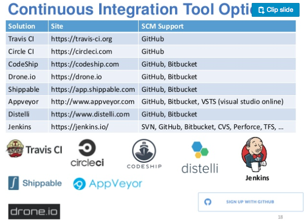
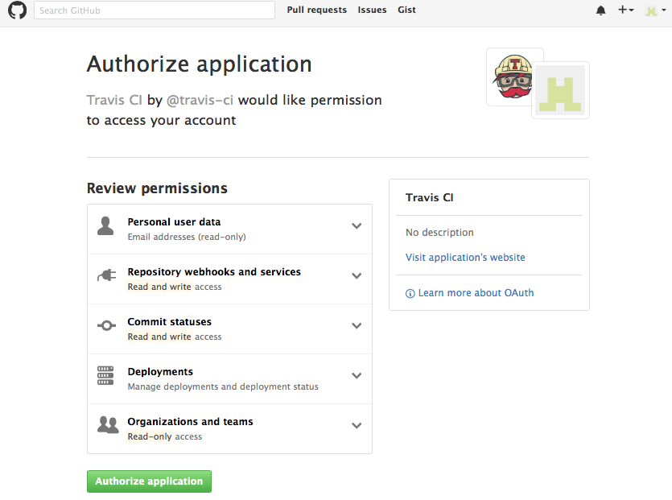
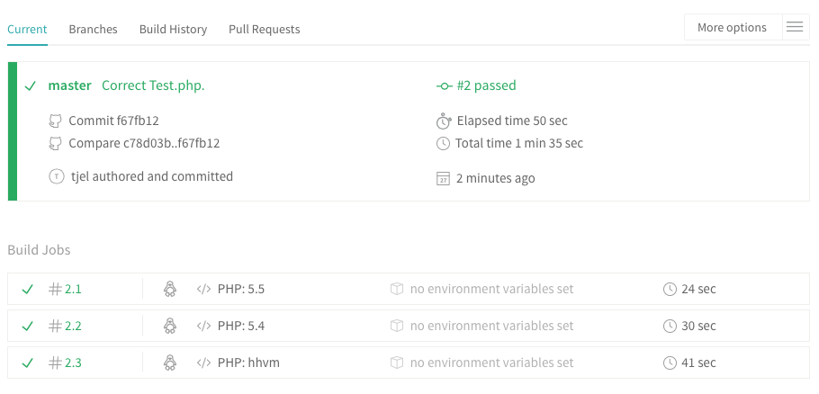

# Srodowiska i narzedzia wytwarzania oprogramowania - wyklad 4 <!--http://developers.redhat.com/blog/2016/09/14/microservices-cicd-pipelines-in-openshift/--> --- ### Definicje ciaglej integracji (CI) - CI is the process of __automatically__ building and running tests on a non-developer machine everytime someone pushes new code into the source repository. --- ### Dlaczego CI jest wazna? - CI eliminuje dlugi i uciazliwy procesu integracji. Dzieki temu caly proces jest dopracowany, dobrze kontrolowany, przejrzysty i godny zaufania. Latwo rowniez znalezc jego potencjalne slabe strony. - Pamietanie o wykonaniu testow przed kazdym commitem jest bardzo niewygodne, jesli robi sie to recznie. - CI zapewnia natychmiastowa informacje zwrotna czy wszystkie testy sa zdane. Dzieki temu szybko dowiadujemy sie o bledach i szybko mozemy wrocic do poprzedniej w pelni funkcjonalnej wersji. - Rzadkie wykonywanie testow powoduje, ze ciezko namierzyc, ktora zmiana kodu wprowadzila krytyczny blad. Gdy testy sa wykonywane automatycznie przy kazdej zatwierdzonej zmianie kodu wtedy jest jasne kto i jaki blad wprowadzil. - Doglebne przetestowanie aplikacji jest konieczne, aby znalezc wszystkie problemy zanim sprawia one problem koncowemu uzytkownikowi. --- ### Najprostsze sposoby automatyzacji kompilacji - skrypt bash np. `run.sh` ```bash #!\bin\bash g++ -Wall circle.cpp -o circle ``` - Makefile & make ```bash # comment # (note: the <tab> in the command line is necessary for make to work) target: dependency1 dependency2 ... <tab> command ``` ```bash # Building the Shell Model Paper all: fig*.svg *.dat *.tex *.pdf photon_photon.dat : photon_analysis.sh ./raw_data/*.h5 ./photon_analysis.sh -n=2 > photon_photon.dat fig4.svg : photon_photon.dat python plot_response.py --input=photon_photon.dat --output=fig4.svg ``` --- ### Makefile - przyklad ```bash # the compiler: gcc for C program, define as g++ for C++ CC = gcc # compiler flags: # -g adds debugging information to the executable file # -Wall turns on most, but not all, compiler warnings CFLAGS = -g -Wall # the build target executable: TARGET = myprog all: $(TARGET) $(TARGET): $(TARGET).c $(CC) $(CFLAGS) -o $(TARGET) $(TARGET).c clean: $(RM) $(TARGET) ``` --- ### Z czego sklada sie proces CI? --- ### Z czego sklada sie proces CI? - SCM integration - primarily to facilitate build automation, but also to be able to <span style="background-color: #FFFF00">report</span> on issues, versions, milestones, ... - Build automation - every commit/push to an SCM repo automatically triggers a new build (anything in the master branch is deployable) - Test automation - tests are evaluated as integral part of the build process - <span style="background-color: #FFFF00">Reporting</span> - the fact that you can see whether builds are passing, test are failing, who did what, when and how - Project management integration - Basecamp, Campfire, Acunote and other PM tools (people, tasks, schedules, ...) - Project Dashboard - everything is out in the open (generally without any read access restrictions, making it available to all interested parties). --- ### Serwer CI --- ### Zdalny serwer CI - [Travis CI](http://www.travis-ci.org) - zaleta: darmowy (ale tylko dla projektow open-source), latwa konfiguracja, nie trzeba konfigurowac calego serwera (np. Jenkinsem) - wada: synchronizacja tylko z GitHubem, fee for closed-source projects based on how many simultaneous builds you want to run - jak dziala: Travis sets up “hooks” with GitHub to automatically run tests at specified times. By default, these are set up to run after a pull request is created or when code is pushed up to GitHub. --- ### Konkurencja Travisa: Bamboo, TeamCity, GitLab CI,...  --- ### Travis CI - konfiguracja  --- ### Travis CI - konfiguracja --- ### Travis CI - konfiguracja --- ### Travis CI - konfiguracja --- ### Travis CI - konfiguracja --- ### Travis CI - konfiguracja --- ### Travis CI - konfiguracja --- ### Dygresja: jezyk YAML, listy, pary klucz-wartosc ```yaml --- # Favorite movies - Casablanca - North by Northwest ``` ```yaml --- # Shopping list [milk, pumpkin, pie, eggs, juice] ``` ```yaml --- # Indented Block name: John Smith age: 33 --- # Inline Block {name: John Smith, age: 33} ``` ```yaml - {name: John Smith, age: 33} - name: Mary Smith age: 27 ``` ```yaml men: [John Smith, Bill Jones] women: - Mary Smith - Susan Williams ``` __zaleta__: bardzo czytelny kod, __wada__: kontrola wciec i odstepow --- ### Plik konfiguracyjny .travis.yml --- ### Plik konfiguracyjny .travis.yml --- ### Plik konfiguracyjny .travis.yml --- ### Plik konfiguracyjny .travis.yml <img src="./travis-5.4.png" width="800"> --- ### git push --- ### Testowanie synchronizacji --- ### Raporty kompilacji - mail --- ### Raporty kompilacji - konto Travis CI --- ### Bledy kompilacji - konto Travis CI --- ### Makefile --- ### Raporty kompilacji - mail --- ### Raporty kompilacji - konto Travis CI --- ### Raporty kompilacji - konto Travis CI --- ### Raporty kompilacji - konto Travis CI --- ### Travis CI - maszyna wirtualna --- ### Further steps: [continuous testing](https://docs.travis-ci.com/user/for-beginners) --- ### Further steps: [continuous testing](https://docs.travis-ci.com/user/for-beginners) --- ### Further steps: [continuous testing](https://docs.travis-ci.com/user/for-beginners) --- ### Further steps: [continuous testing](https://docs.travis-ci.com/user/for-beginners) --- ### Further steps: [continuous testing](https://docs.travis-ci.com/user/for-beginners)  --- ### Further steps: [continuous testing](https://docs.travis-ci.com/user/for-beginners) --- ### Continous delivery/deployment (CD) > "You made sure the build compiles fine. The code can compile fine but when you install the build and launch the app the app may not even launch! Here CD comes into the picture. It 'smoke tests' your apps on every build check in or a nightly before you send it testers."